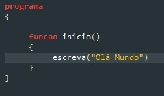

Antes de iniciarmos, para fazer o download e instalação do portugol studio
Lembrando que o portugol studio não é uma linguagem de programaçõa, mas um ambiente de aprendizagem, ele funciona através de um interpretador, e não gera arquivos executáveis.
Existem diversos vídeo e tutorieis online que ensinam a utilizar essa ferramenta. O foco desse página será a proposição e resolução de alguns exercícios de lógica de programação, e o portugol studio servirá como forma de verificar a aplicablidade da nossa lógica. Funcionará como um pseudocódigo passível de ser testado
Criação do programa "olá, mundo!". Esse programa tem por objetivo escrever na tela a frase "olá, mundo!"
Resolução
